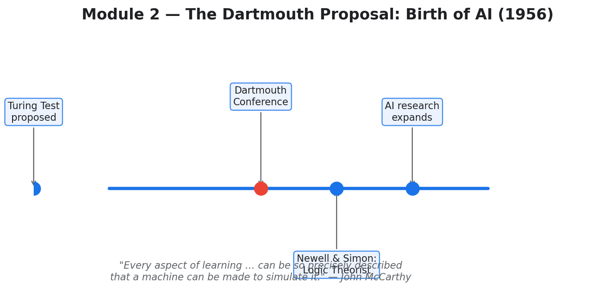
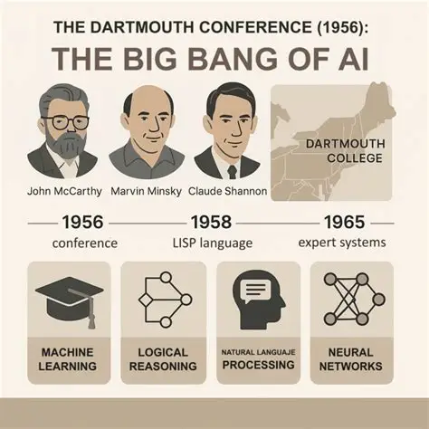

| Assignment Type | Assignment — Research Essay |
|---|---|
| Topic | The 1956 Dartmouth Summer Research Project on Artificial Intelligence |
| Date Submitted | 8 February 2026 |
In the summer of 1956, a small group of scientists gathered at Dartmouth College for what would later be known as the Dartmouth Summer Research Project on Artificial Intelligence. This event is widely considered the birthplace of artificial intelligence as a formal academic field. During this workshop, the term artificial intelligence was officially introduced by computer scientist John McCarthy, who believed that machines could eventually be designed to simulate every aspect of human learning and intelligence (Moor 87).
At the time, computers were extremely limited — large, expensive machines that could only follow very basic instructions. Despite these limitations, the researchers at Dartmouth believed it was possible for computers to reason, learn, use language, and even improve themselves. McCarthy defined artificial intelligence as the idea that “every aspect of learning or any other feature of intelligence can in principle be so precisely described that a machine can be made to simulate it” (Moor 87).
One interesting detail is that the conference did not function like a modern group workshop. Many participants — including Allen Newell, Herbert Simon, and Ray Solomonoff — were not present at the same time. Instead of working closely together, most continued their own independent research during the summer (Veisdal). Even so, the ideas shared during this event helped shape how scientists thought about intelligent machines for decades to come.


The Dartmouth conference changed how people thought about computers. Before this event, computers were mostly seen as tools for performing calculations. The idea that a machine could think, learn, or solve problems like a human was considered unrealistic by many. The Dartmouth proposal challenged that belief and suggested that intelligence itself could be studied, defined, and recreated using machines (Moor 87).
During the conference, the researchers identified several major research goals they believed machines could eventually accomplish:
| Research Goal | Modern Equivalent |
|---|---|
| Programming computers to use language | Natural Language Processing (NLP) |
| Creating artificial neural networks | Deep Learning |
| Enabling self-improvement | Reinforcement Learning |
| Understanding creativity and randomness | Generative AI |
This assignment put the entire field of AI into historical perspective. Learning that AI was formally named and defined at a single summer workshop in 1956 was surprising — it made the field feel simultaneously recent and remarkably visionary. The goals identified at Dartmouth (language, neural networks, self-improvement, creativity) are the exact same problems that GPT-3, T5, AlphaGo Zero, and Stable Diffusion are solving today, nearly 70 years later.
I also appreciated the nuance that the conference was less collaborative than its reputation suggests. Science often advances through individual effort and parallel thinking, not just group workshops — a lesson that applies beyond AI.
Moor, James H. “The Dartmouth College Artificial Intelligence Conference: The Next Fifty Years.” AI Magazine, vol. 27, no. 4, 2006, p. 87.
Veisdal, Jørgen. “The Birthplace of AI.” The Gradient, 2019.